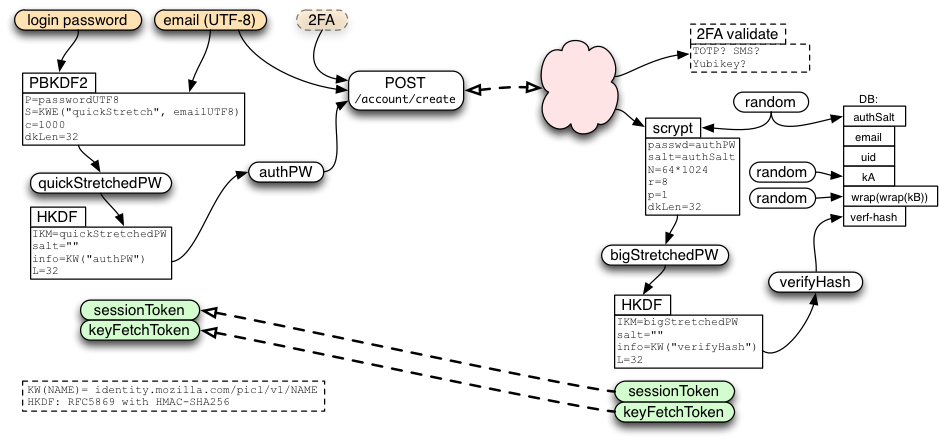

Mozilla 很高興能發表新版 Firefox Sync 同步功能，現已能於 Firefox 曙光版 (Aurora) 上進行測試。現有 Firefox Sync 使用者當然愛用這項服務，但也反應說相關設定仍稍嫌繁瑣，要新增其他裝置並不是很輕鬆；若要從遺失的裝置恢復設定資料更是困難。我們聽到了這些意見，也設計出更簡單的方式，期待能在 Firefox 桌面版與行動版之間安全同步資料。
新版 Firefox Sync 的初始設定更簡單，也可輕鬆添增其他裝置。如果想測試新的 Firefox Sync 功能，則只要在Windows、Mac，或 Linux 版 Firefox 中輸入電子郵件位址，再選用高強度又好記的密碼即可。接著就能輕鬆添增更多電腦或 Android 裝置進行同步。

我要如何使用新的 Firefox S ync？
新的 Firefox Sync 功能現已可在 Firefox Aurora 上使用。若要進一步了解 Firefox Sync 的測試方式，可先參閱本篇 Sumo 文章。
安全性更高
Mozilla 一直是以透明的流程獲得大家的信任。也因為如此，我們這次仍同樣透過開放的方式，開發新同步功能所需的強大安全系統。
雖然 Firefox Sync 的設定與登入流程更為簡化，但對於使用者資料的安全性卻未曾妥協。新版同步功能具備與現有產品相同的端點對端點加密 (End to end encryption) 機制，但設定步驟更簡單。
讓新版 Firefox Sync 更簡單易用的關鍵，即在於我們根據使用者自己所設定的密碼，將之抽取而成資料加密所用的金鑰。也就是說，使用者設定的密碼強度越高，對自己的保障也就越完整。Mozilla 再從三個方向強化此基本方法：
第一，「Client side key stretching」這項技術可抵擋中間人攻擊 (man-in-the-middle attack，MITM)；就算 SSL 憑證遭到破解也能達到特定程度的防護效果。
第二，即使 Mozilla 伺服器遭到入侵，端點對端點加密機制也讓人難以存取使用者的資料。
第三，公開金鑰密碼系統 (Public key cryptography) 與 BrowserID 協定，可確實區隔出「驗證 (Authentication)」、「授權 (Authorization)」、「資料儲存 (Data storage)」伺服器，藉以減少經手驗證資料的伺服器數量並降低受攻擊的機會。
另可參閱 Github 上的本篇技術文件，以進一步了解新版同步功能的安全架構。

如同前一版的 Firefox sync 同步功能，使用者仍可選擇保留自己的資料，並透過開放源碼的伺服端軟體托管自己的同步服務。
Mozilla 仍不斷透過此新的安全架構汲取更多經驗，相信很快就能兼顧安全性與便利性的資料存取作業。
接著下一步？
Mozilla 現正準備將新的 Firefox Sync 同步功能導入 Firefox 瀏覽器。緊接著就會讓 Firefox OS 整合此新的同步功能。
最後，為了能更輕鬆設計出更多的 Firefox Sync 附加功能，我們也為 Firefox 使用者建立了完整的帳號系統。Mozilla 將積極透過此系統提供新的服務，讓 Firefox 使用者享受有趣的新功能。